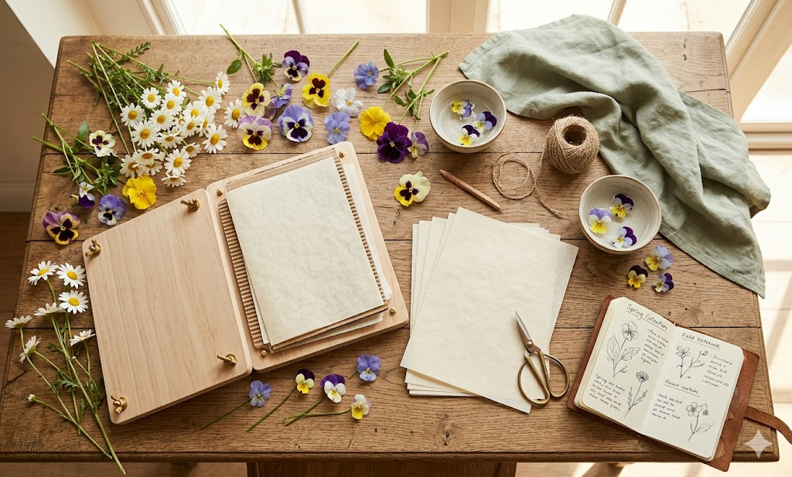
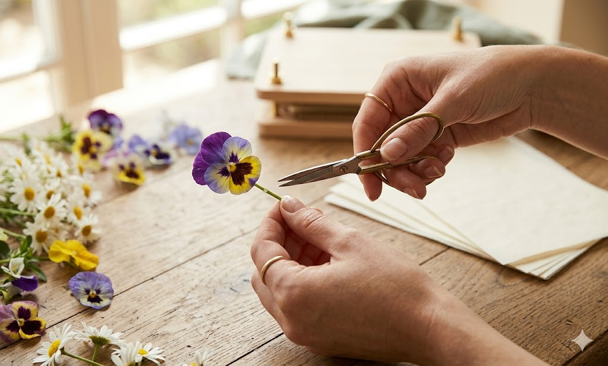

Flower pressing is a beautiful way to capture a moment in time. Whether it's a bloom from your garden or a special gift, the process of drying and flattening a flower preserves its delicate structure and often its vibrant color for years to come.
The Tools You'll Need
- A heavy book or a wooden flower press
- Parchment paper or acid-free blotting paper
- Fresh flowers (at the peak of their bloom)
- A pair of small, sharp scissors
Step 1: Selecting Your Flowers
Not all flowers press equally well. For beginners, we recommend starting with "flat" flowers like pansies, daisies, or violas. These have a simple structure that is easy to flatten without losing too much detail.
Step 2: Preparing the Bloom
Carefully trim the stem as close to the base of the flower as possible. If you are pressing the stem too, make sure it is clean and dry. Moisture is the enemy of preservation—any dampness can lead to mold during the drying process.

Step 3: The Pressing
Place a sheet of parchment paper inside your book. Arrange your flowers face down on the paper, ensuring they don't touch each other. Cover with another sheet of parchment and close the book. For best results, place several more heavy books on top.
The Waiting Game
Patience is key. Leave your flowers undisturbed for at least 2-3 weeks. In a cool, dry place, the moisture will slowly be drawn out, leaving you with a perfectly preserved botanical specimen.